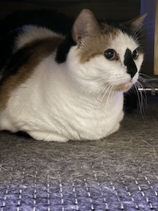

I am an English undergraduate at the University of Massachusettes Amherst specializing in Professional Writing and Technical Communication, Creative Writing, and building a career for UX. My area of intrest emphisises clearly communicating ideas and emotions for an audience to both understand and create an oppurtunity for conversation to explore the depths of those ideas.
I have a strong passion for creative thinking in multiple mediums. One of the biggest lessons I've learned is the importance of creating your own language for your work that is uniquely your own and comprehensable by your audience. It liberates me to study highly specified information and convey that information in a way that allows the audience to enjoy the experience rather than be overwhelmed by the nuances I've worked through.
Here's a link to my online portfolio:To Be Updated.
Contact me: Btrevisone@umass.edu